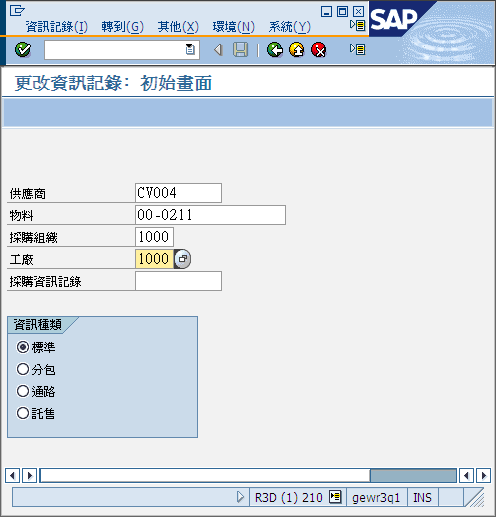
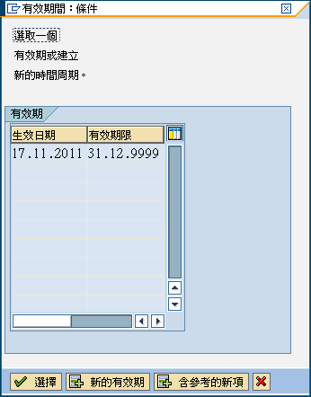
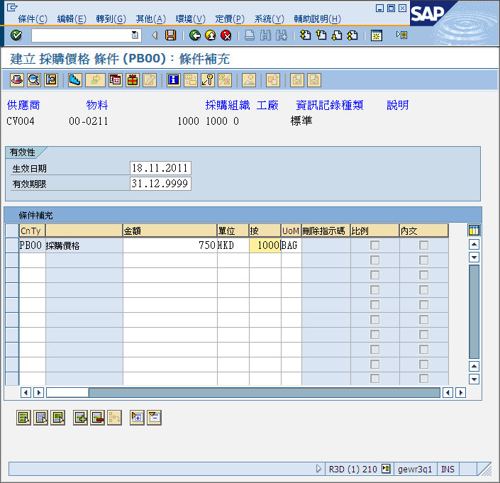

引言
如果你想更改單價，就必須維護購買資訊記錄 (Purchase Info Record)，購買資訊記錄記載以下資料：單價、最少購買數量、購買單位等等資料。以下3項都是維護購買資訊記錄的T-Code：
- ME11 – 建立購買資訊記錄
- ME12 – 更改購買資訊記錄
- ME13 – 顯示購買資訊記錄
本文將會講述如何更改購買資訊記錄。舉一個例子，供應商CV004對物料00-0211更新價格，此項物料以一包100公斤為包裝，2011年11月18日前1000包價錢值$500 HKD，在公廠1000購買，現在需要為此物料更新價格，新價格為1000包$750 HKD。
前提
更改單價前你必須確定已完成以下步驟：
- 建立購買資訊記錄
更改購買資訊記錄
輸入以下資料：
- 供應商，例如CV004
- 物料，例如00-0211
- 採購組織，例如1000
- 工廠，例如1000
- 資訊種類，請選擇標準(Standard)、分包/外發加工(Subcontract)或託售(Consignment)
按”採購機構資料”。

按”條件”。
按”新的有效期”。
注意：新的購買資訊記錄有效期為2011年11月18日。
輸入以下資料：
- 淨價，必須列明數量及價錢，數量必需為1000，如每1000包 $750 HKD ，價錢便輸入$750 HKD
按“儲存”完成操作。
提示
新的購買資訊記錄有效期
新的購買資訊記錄有效期為2011年11月18日，代表所有由該日或該日後開出的訂單才會以新價格買入。
資訊
不同工廠(1000, 3300)、不同供應商(CA002, CV004)、不同物料都有它們自己的購買資訊記錄。